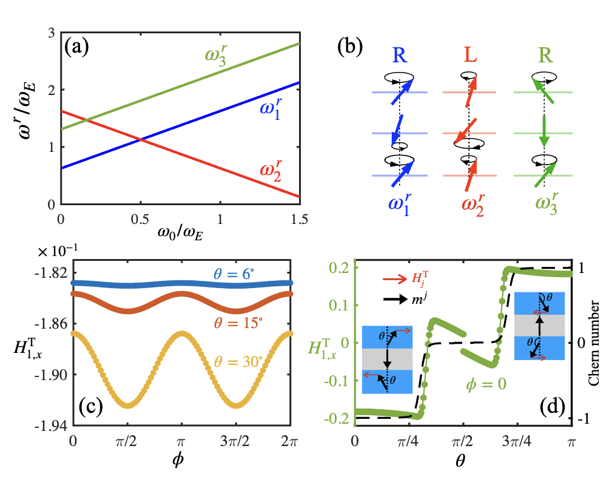
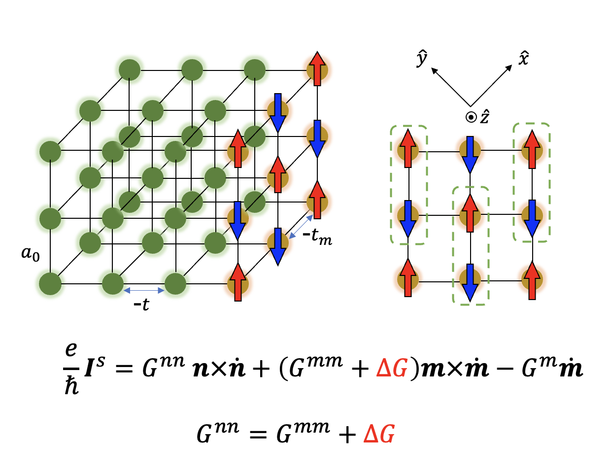

Lossless Spin-Orbit Torque in Antiferromagnetic Topological Insulator MnBi2Te4 [Link]
We formulate and quantify the spin-orbit torque (SOT) in intrinsic antiferromagnetic topological insulator MnBi2Te4 of a few septuple-layer thick, which exhibits conspicuous layer-resolved characteristics. Contrary to known current-induced torques, the SOT in insulating MnBi2Te4 is driven by an electric field (or voltage). We further study the SOT-induced magnetic resonances, where in the tri-septuple-layer case we identify a peculiar exchange mode that is blind to microwaves but can be exclusively driven by the predicted SOT. As an inverse effect of the SOT, topological charge pumping generates an adiabatic current devoid of Joule heating, which occurs concomitantly with the SOT and gives rise to an overall magneto-reactance for MnBi2Te4, enabling a lossless conversion of electric power into magnetic dynamics.
Voltage-driven exchange resonance achieving %100 mechanical efficiency [Link]
Magnetic resonances driven by current-induced torques are crucial tools to study magnetic materials but are very limited in frequency and mechanical efficiency. We propose an alternative mechanism, voltage-induced torque, to realize high efficiency in generating high-frequency magnetization dynamics. When a ferromagnet–topological insulator–ferromagnet trilayer heterostructure is operated as an adiabatic quantum motor, voltage-induced torque arises from the adiabatic motion of gapped topological electrons on the two interfaces and act oppositely on the two ferromagnetic layers, which can excite the exchange mode where the two ferromagnetic layers precess with a π-phase difference. The exchange mode resonance, bearing a much higher frequency than the ferromagnetic resonance, is accompanied by topological charge pumping, leading to a sharp peak in electrical admittance at the resonance point. Because the output current is purely adiabatic while dissipative current vanishes identically, the proposed voltage-driven exchange resonance entails a remarkably high mechanical efficiency close to unity, which is impossible in any current-driven systems.
Unidirectional Spin Hall Magnetoresistance in Antiferromagnetic Heterostructures [Link]
Unidirectional spin Hall magnetoresistance (USMR) has been widely reported in the heavy metal/ferromagnet bilayer systems. We observe the USMR in Pt/α−Fe2O3 bilayers where the α−Fe2O3 is an antiferromagnetic (AFM) insulator. Systematic field and temperature dependent measurements confirm the magnonic origin of the USMR. The appearance of AFM-USMR is driven by the imbalance of creation and annihilation of AFM magnons by spin orbit torque due to the thermal random field. However, unlike its ferromagnetic counterpart, theoretical modeling reveals that the USMR in Pt/α−Fe2O3 is determined by the antiferromagtic magnon number with a non-monotonic field dependence. Our findings extend the generality of the USMR which pave the ways for the highly sensitive detection of AFM spin state.
Absence of cross-sublattice spin pumping and spin-transfer torques in collinear antiferromagnets [Link]
There have been debates over the existence of cross-sublattice (CS) contributions to spin pumping and spin-transfer torques in an antiferromagnet (AFM) connected to a non-magnetic metal. By studying the interfacial spin conductance from a symmetry perspective, we first relate the CS spin pumping to the CS spin-transfer torques in a two-sublattice AFM. Then by calculating the interfacial spin-dependent electron scattering microscopically, we ascertain the exact absence of the controversial CS contributions in the collinear regime. Even in the non-collinear regime, we find that the CS components only constitute a higher-order correction to the known theory.